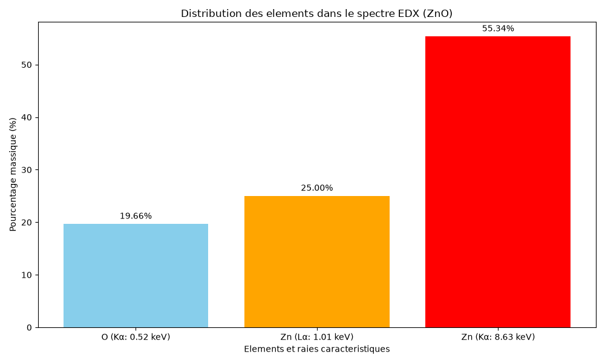
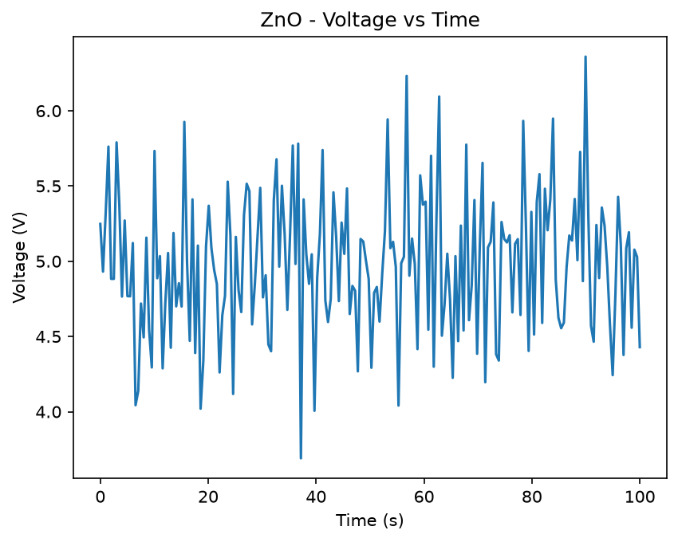
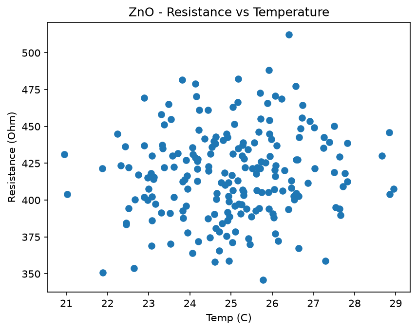

De la préparation des données jusqu'aux résultats finaux.
Exemple données initiales : Time_s,Voltage_V,Current_mA,Resistance_Ohm,Temp_C 0,5.02,11.8,425.4,25.1 1,5.05,11.5,439.1,25.3 2,5.10,11.2,455.3,24.9 3,5.08,10.9,466.0,25.2 4,5.12,10.5,487.6,25.4

Spectre EDX sur lequel on a travaillé : distribution des éléments dans ZnO.
import pandas as pd
import numpy as np
n=200
time=np.arange(n)
voltage=5+0.5*np.sin(time/10)+np.random.normal(0,0.1,n)
current=10+2*np.cos(time/15)+np.random.normal(0,0.5,n)
resistance=voltage/(current/1000)
temp=25+0.05*time+np.random.normal(0,0.5,n)
df=pd.DataFrame({'Time_s':time,'Voltage_V':voltage,'Current_mA':current,'Resistance_Ohm':resistance,'Temp_C':temp})
df.to_csv('ZnO_realistic.csv',index=False)
print("CSV cree avec 200 lignes")
import pandas as pd
import matplotlib.pyplot as plt
df=pd.read_csv('ZnO_realistic.csv')
print(df.describe())
plt.figure(); plt.plot(df['Time_s'],df['Voltage_V']); plt.savefig('plot_voltage_time.png')
plt.figure(); plt.scatter(df['Temp_C'],df['Resistance_Ohm']); plt.savefig('plot_resistance_temp.png')
plt.figure(); plt.hist(df['Resistance_Ohm'],bins=20); plt.savefig('plot_hist_resistance.png')
print("3 graphiques sauvegardés")
import math
import matplotlib.pyplot as plt
Z=1.96; p=0.5; e=0.07
n=math.ceil((Z**2*p*(1-p))/(e**2))
print(f"Taille: n = {n}") # 196
elements={'O (Ka: 0.52 keV)':19.66,'Zn (La: 1.01 keV)':25.0,'Zn (Ka: 8.63 keV)':55.34}
plt.bar(elements.keys(),elements.values(),color=['skyblue','orange','red'])
plt.title('Distribution des elements dans le spectre EDX (ZnO)')
plt.savefig('spectre_elements.png')

